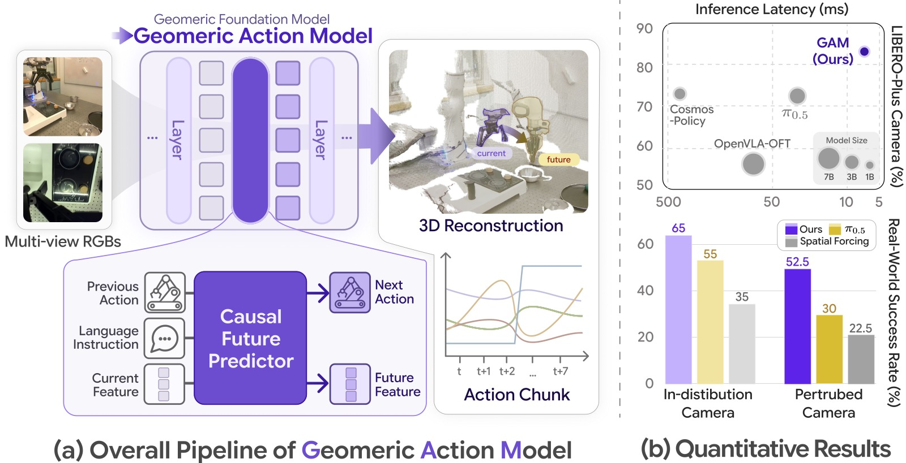
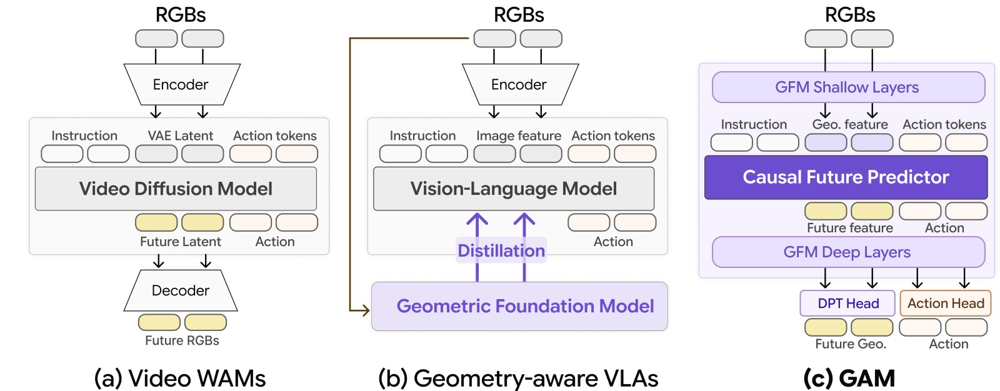
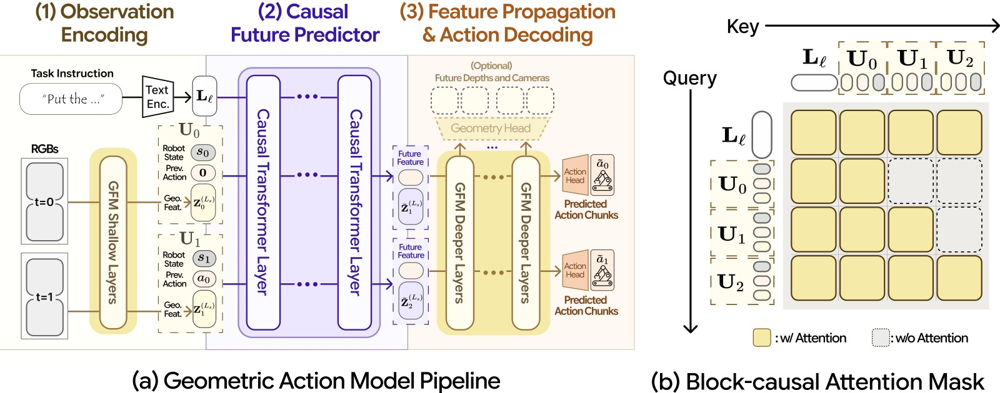
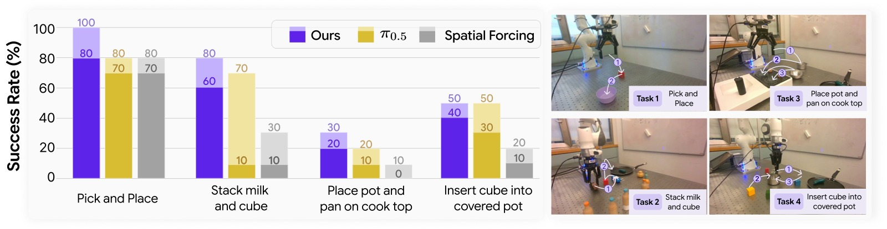
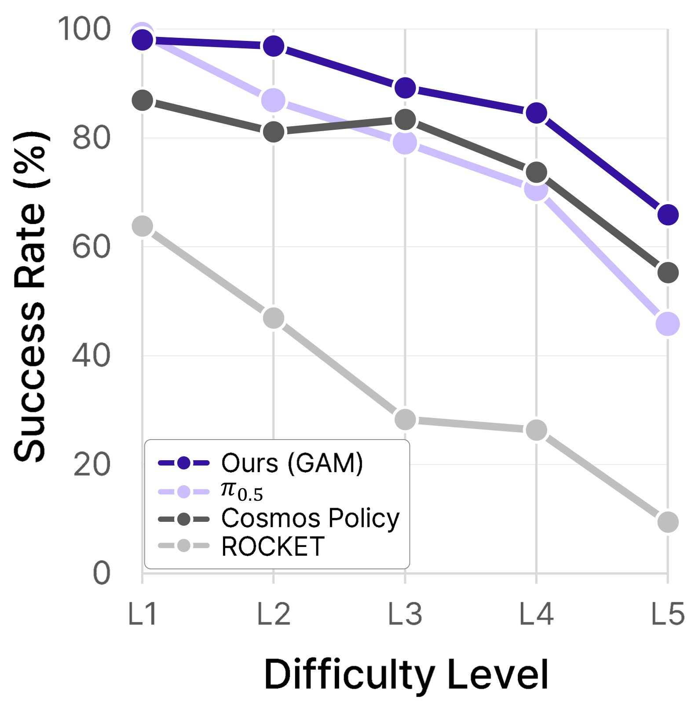
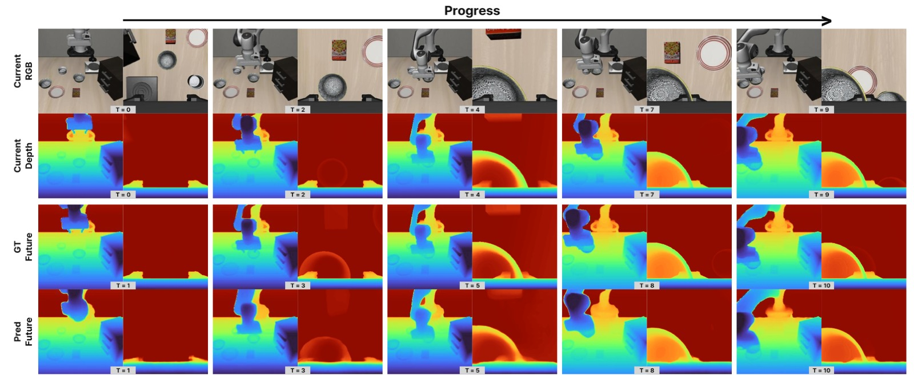
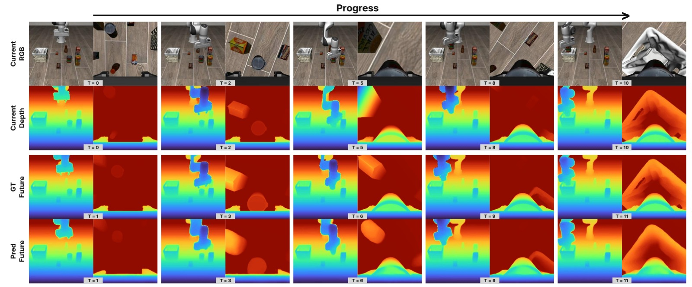
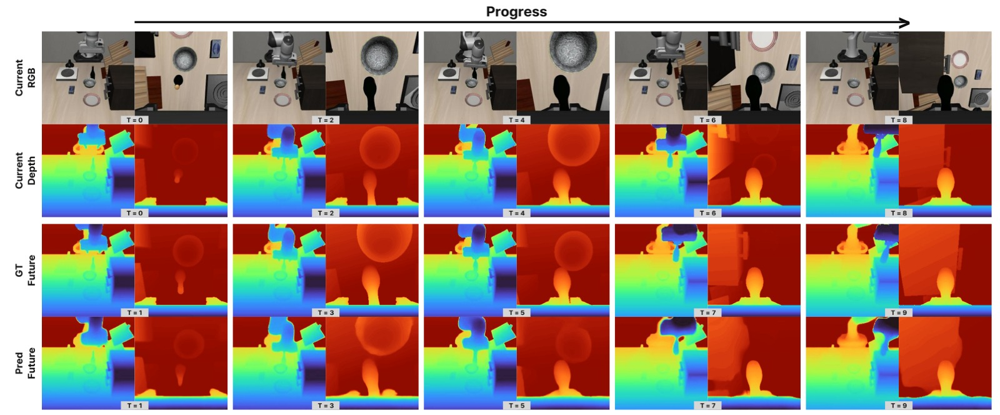
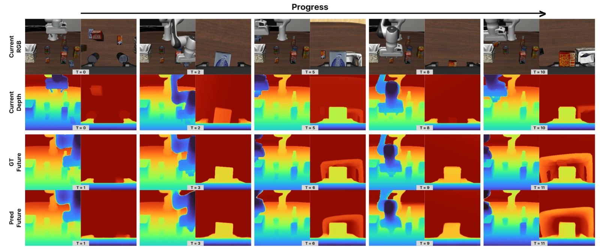
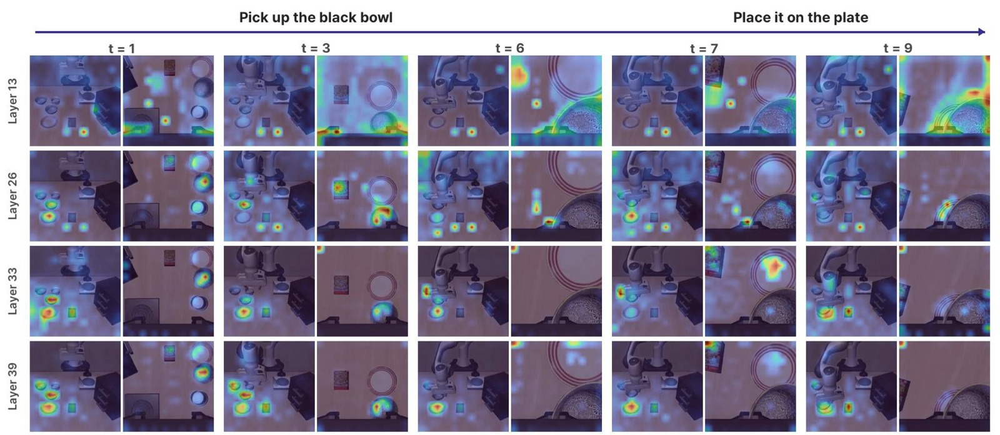

Geometric Action Model for Robot Policy Learning
论文信息 - 作者：Jisang Han*、Seonghu Jeon*、Jaewoo Jung、René Zurbrügg、Honggyu An、Tifanny Portela、Marco Hutter、Marc Pollefeys、Seungryong Kim†、Sunghwan Hong† - 通讯作者：Seungryong Kim（KAIST AI）、Sunghwan Hong（ETH AI Center） - 机构：KAIST AI / ETH Zurich / ETH AI Center - 投稿方向：CoRL 2026（投稿中，under review） - arXiv ID：2606.17046v1 - 项目主页：https://cvlab-kaist.github.io/Geometric-Action-Model/
本文基于以下本地材料整理：
- 论文 TeX 源码：
arXiv-2606.17046v1/（主文件：main.tex，章节在sections/）- 论文插图：
arXiv-2606.17046v1/figures/*.pdf（关键图：teaser3.pdf、arch3.pdf、compare2.pdf、real_task.pdf、camera_perturb.pdf、attention_layers_timestep_subset_pretendard_v4.pdf）- 本文图片导出目录：
assets/GAM/
一、核心问题
机器人操作策略需要同时理解语言指令、视觉外观、3D 场景几何、机器人状态和物理动力学。现有两类主流方法各有根本缺陷：
- Vision-Language-Action Models (VLAs)：继承 VLM 的语义先验，但本质上在 2D 图像空间工作，缺乏深度/遮挡/尺度的显式 3D 理解，导致面对相机视角变化、背景变化等场景扰动时泛化性差。
- Video World-Action Models (WAMs)：利用视频扩散模型预测未来帧和动作，但视频先验仍是 2D 像素空间，且扩散采样导致推理极慢（Cosmos Policy 需 382ms）。
已有工作尝试将几何基础模型（GFM）引入 VLA（Spatial Forcing、ROCKET），但只是把 GFM 当作静态特征提取器或蒸馏信号来源——GFM 的多层几何结构从未被真正用作策略自身的时序和动作生成主干。
核心问题：能否将预训练的几何基础模型（GFM）整体重用为机器人策略的感知-预测-解码共享骨干，同时获得 3D 几何先验、世界模型时序建模和高效推理三者？
二、核心思路 / 方法
2.1 整体设计直觉

图1：GAM 整体设计与性能总览，左右两栏分别展示系统架构和核心量化结果。
左栏 (a) Overall Pipeline of Geometric Action Model： 多视图 RGB 图像（上下两张，对应不同时刻 t=0、t=1）输入 GFM Shallow Layers，提取几何特征后送入 Causal Future Predictor。该 Predictor 同时接收三类输入——Previous Action（前序动作，机器人臂形图标）、Language Instruction（语言指令，气泡图标）、Current Feature（当前几何 latent，方块图标），并联合预测两类输出：Next Action（下一步动作 token）和 Future Feature（未来几何 latent）。Future Feature 随后经 GFM 深层解码为右侧的 3D Reconstruction（点云重建，展示真实桌面场景）。右下的折线图显示 action chunk 的时序结构——横轴 t 到 t+7 表示预测的 8 步动作序列，纵轴代表各维度动作幅度，不同颜色线条对应不同动作自由度。这一管线的关键特征是：所有计算在单一 GFM 骨干内一次前向传播完成，无需独立的世界模型或扩散采样。
右栏 (b) Quantitative Results： 分两部分。上方气泡散点图横轴为推理延迟（ms，X 轴从右到左递减，即越靠右越快），纵轴为 LIBERO-Plus Camera 扰动成功率（%），气泡大小对应模型参数量（7B / 3B / 1B 三种尺寸标注在图例）。GAM（深蓝实心圆，位于右上角）同时达到最高 Camera 成功率（约 83%）和最低延迟（约 7ms），在所有方法中独占"快且好"的区域；Cosmos Policy（左侧大灰泡）延迟超过 400ms，π₀.₅（中间位置）延迟约 30ms 但成功率低于 GAM。下方柱状图为真实机器人实验 ID vs. OOD 成功率对比，三种方法（蓝色=GAM、黄色=π₀.₅、灰色=Spatial Forcing）各评估正常相机（In-distribution）和扰动相机（Perturbed）两种条件。GAM 在 ID/OOD 分别达到 65%/52.5%，π₀.₅ 为 55%/30%，Spatial Forcing 为 35%/22.5%——GAM 在 OOD 条件下的优势（52.5% vs. 30%）尤为突出，说明几何先验在相机视角偏移时提供了真实的鲁棒性收益。
2.2 方法对比：三种范式

图2：现有机器人策略三种主流范式的架构对比，从左到右依次是 Video WAMs、Geometry-aware VLAs 和 GAM（本文）。
子图 (a) Video WAMs（如 Cosmos Policy、MIMIC）：数据流为 RGBs → Encoder → Video Diffusion Model → 同时输出 Future Latent 和 Action → Decoder → Future RGBs。Video Diffusion Model 在 VAE 2D latent 空间中联合建模未来帧和动作，预测时需多步去噪（Cosmos Policy 需约 382ms）。核心局限：整个处理管线停留在 2D 像素空间，深度、遮挡和尺度信息只能靠模型隐式学习，对相机视角变化本质上不鲁棒。
子图 (b) Geometry-aware VLAs（如 Spatial Forcing、ROCKET）：数据流为 RGBs → 两路并行——上路 Encoder → Vision-Language Model 输出 Action；下路同一 RGBs → Geometric Foundation Model，以蒸馏（Distillation）方式将 GFM 特征注入 VLM 的中间表示。GFM 在这一范式中是旁路信号提供者，不参与预测计算通路。问题在于 VLM 才是真正的时序和动作解码主干，GFM 的多层几何结构从未被直接用于预测——实验证明 Spatial Forcing 在 Camera 扰动下成功率崩溃至 0.1%，说明浅层蒸馏无法传递完整的 3D 几何理解。
子图 (c) GAM（本文）：数据流完全不同——RGBs 直接进入 GFM Shallow Layers 提取几何 latent，接着 Instruction + Action tokens 与几何 latent 一起送入 Causal Future Predictor（深紫色大块，位于 GFM 中间），同时预测 Future feature 和 Action token，两者再经 GFM Deep Layers 统一解码，分别由 DPT Head 输出 Future Geo.（未来几何）和 Action Head 输出最终 Action。关键区别：GFM 既是感知编码器，也是世界模型的解码器，预测直接在 GFM 的几何表示空间中进行，一次前向传播完成所有计算。这解释了为何 GAM 在 Camera 扰动下成功率高出第二名 9.7%p——几何理解不是事后附加的，而是贯穿整个预测过程的。
2.3 GAM 架构详解

图3：GAM 完整架构图，左栏展示三阶段处理管线（Observation Encoding → Causal Future Predictor → Feature Propagation & Action Decoding），右栏展示 Block-Causal Attention Mask 的具体设计。
左图 (a) Geometric Action Model Pipeline：
图中以两个时步（t=0、t=1）为例说明时序处理流程：
-
阶段①：Observation Encoding（黄色 GFM Shallow Layers）。每个时步的多视图 RGB 图像独立通过 GFM 浅层（layers 1~L_s），提取几何 latent $\mathbf{Z}_{t'}^{(L_s)}$。t=0 产生 $\mathbf{Z}_0^{(L_s)}$，t=1 产生 $\mathbf{Z}_1^{(L_s)}$，二者独立编码。每个时步还将本体感觉 $s_{t'}$ 和前一动作 $a_{t'-1}$ 投影为 token（图中 Robot State $s_0$、Prev. Action $\mathbf{0}$），与几何 latent 拼接形成 per-timestep block $\mathbf{U}_{t'} = [\mathbf{p}_{t'}; \mathbf{q}_{t'}; \mathbf{Z}_{t'}^{(L_s)}]$。
-
阶段②：Causal Future Predictor（深紫色 Causal Transformer Layer 双栏，对应上下两个时步的处理）。全部 block 与语言 token $\mathbf{L}_\ell$ 拼接后，经 block-causal 自注意力处理，在 $t'$ 的输出槽分别读取：（i）未来几何 latent $\tilde{\mathbf{Z}}_{t'+1}^{(L_s)}$（图中蓝色 Future Feature 方块），（ii）动作 token $\tilde{\mathbf{a}}_{t'}$。这一设计与语言模型的 next-token prediction 直接类比——每个时步预测下一个几何状态和当前动作。
-
阶段③：Feature Propagation & Action Decoding（黄色 GFM Deeper Layers 双栏）。预测的 Future Feature 拼接上复制的动作 token，送入 GFM 深层（layers L_s+1~M）。每个时步的输出：Action Head 聚合动作 token 输出可执行动作 chunk（图右侧 Predicted Action Chunks $\hat{a}_0$、$\hat{a}_1$），虚线框 Geometry Head 可选地从 DPT 解码头输出未来深度图和相机参数（Optional Future Depths and Cameras）。
右图 (b) Block-Causal Attention Mask：
横轴（Key）为被注意的 token 序列：语言 $\mathbf{L}_\ell$，以及时步 block $\mathbf{U}_0$、$\mathbf{U}_1$、$\mathbf{U}_2$；纵轴（Query）同序。黄色填充格（w/ Attention）表示允许注意，灰色虚线格（w/o Attention）表示被 mask。规则为：语言 token $\mathbf{L}_\ell$ 对所有时步可见（第一行全黄）；$\mathbf{U}_0$ 只能注意 $\mathbf{L}_\ell$ 和自身 $\mathbf{U}_0$（第二行前两列黄，后两列灰）；$\mathbf{U}_1$ 能注意 $\mathbf{L}_\ell$、$\mathbf{U}_0$、$\mathbf{U}_1$（前三列黄），但看不到 $\mathbf{U}_2$；以此类推。这一 block-causal 设计保证当前时步的预测不依赖未来时步的观测，同时允许语言指令全局广播到所有时步——与 π₀ 原始设计一致，是让单次前向传播处理多时步历史的核心机制。
2.4 数学形式
问题形式化：给定 H 帧历史观测 $o_{t-H+1:t}$、本体感觉状态 $s_{t-H+1:t}$、动作历史 $a_{t-H:t-1}$ 和语言指令 $\ell$，学习策略：
其中 $\hat{a}_t \in \mathbb{R}^{C \times d_a}$ 为长度 $C=8$ 的动作 chunk，$d_a=7$（7 自由度 end-effector delta-pose：3 平移 + 3 旋转 + 1 夹爪）。这里明确用了 action chunk 而非单步动作，是为了让策略开环执行 8 步后再重新观测，减少推理频率需求（配合 145Hz 的推理速度，8 步 chunk 实际执行控制频率约 18Hz）。
GFM 分割：
将 $M$ 层的 GFM 在第 $L_s$ 层切开，浅层 $E_{\leq L_s}$ 做观测编码，深层 $D_{>L_s}$ 做解码。$L_s$ 的选取有两个约束：（1）$L_s$ 要足够深——浅层特征语义不足，在 $L_s=0$ 时直接崩溃（Orig 5.4%，Plus 1.8%）；（2）$L_s < m_1$，即浅于 DPT 深度解码头使用的最早特征层，保证 Predictor 预测的未来 latent 仍能被 DPT head 正确解码为深度图。实验确认 $L_s=12$ 最优，恰好是 DA3-Giant 中 frame-wise attention 切换为 global attention 的边界——此处特征既有足够几何语义，又留下足够多深层供解码。
Causal Future Predictor 的输入构造：
逐项解读：
- $\psi_s, \psi_a$ 是轻量投影层（linear），把本体感觉 $s_{t'} \in \mathbb{R}^{7}$ 和前一动作 $a_{t'-1} \in \mathbb{R}^{7}$ 映射到与 GFM latent 同维度的 token，使它们可以直接拼接到几何 token 序列中。
- $\mathbf{Z}_{t'}^{(L_s)} \in \mathbb{R}^{V(1+P) \times d}$ 是当前时步 $t'$ 在分割层的几何 latent，包含 $V$ 个视角各自的相机 token（$\mathbf{c}_v$）和 $P$ 个 patch token。
- $\mathbf{U}_{t'}$ 是将本体感觉、动作历史、几何 latent 三路拼接后的 per-timestep block，维度为 $(2 + V(1+P)) \times d$。
- $\mathbf{X}$ 是完整序列输入：语言 token $\mathbf{L}_\ell$ 打头，后跟 $H$ 个时步的 block。后训练时 $H=1$，输入仅含当前时步——这与消融实验结论吻合（更长历史反而引入虚假相关性，$H=1$ 最优）。
- 整个 $\mathbf{X}$ 通过 block-causal 自注意力，各时步 block 只能注意自身和更早的 block（因果约束），但语言 $\mathbf{L}_\ell$ 对所有时步可见（全局广播）。
Feature Propagation：
Predictor 输出预测的未来几何 latent $\tilde{\mathbf{Z}}_{t'+1}^{(L_s)}$ 和动作 token $\tilde{\mathbf{a}}_{t'} \in \mathbb{R}^d$。动作 token 被复制 $V$ 份，拼接到每个视角的几何 token 序列末尾，再一起经过 GFM 深层 $D_{>L_s}$。这一设计的意义是：动作 token 在 GFM 深层的 global attention 中能与全部几何 patch token 交互，让几何解码和动作精化共享同一套计算，而不是用两个独立头分别处理。同时，深层的因果 mask 延伸到这里，防止跨时步的信息泄漏。最终从 $\tilde{\mathbf{Z}}_{t'+1}^{(M)}$ 中取出各视角对应的动作 token slot，经 Action Head（轻量 MLP）聚合输出动作 chunk $\hat{a}_{t'}$；DPT Head 从多个中间层 $\tilde{\mathbf{Z}}_{t'+1}^{(m^*)}$ 解码出像素级未来深度图。
三、训练目标
三项损失的权重为 $\lambda_{\text{act}}=3$、$\lambda_{\text{feat}}=1$、$\lambda_{\text{depth}}=3$。
| 损失项 | 含义 | 公式/说明 |
|---|---|---|
| $\mathcal{L}_{\text{act}}$ | 动作回归损失 | 预测动作 chunk $\hat{a}_{t'}$ 与专家动作 $a_{t'}$ 的 $\ell_1$ 距离，对上下文窗口内所有时刻求和 |
| $\mathcal{L}_{\text{feat}}$ | 未来特征预测损失 | $\sum_{t'\in\mathcal{H}} \|\tilde{\mathbf{Z}}_{t'+1}^{(L_s)} - \mathbf{Z}_{t'+1}^{(L_s)}\|_1$，将预测的未来 latent 对齐到冻结 GFM 编码的真实下一帧 latent |
| $\mathcal{L}_{\text{depth}}$ | 未来深度预测损失 | DPT head 解码的预测未来深度图 $\tilde{D}_{t'+1}$ 与 GT 未来深度 $D_{t'+1}$ 之间的 scale-invariant + gradient-matching 损失（继承 GFM 原始深度损失） |
直觉：$\mathcal{L}_{\text{feat}}$ 迫使预测器学习几何时序转移（"世界将如何变化"）；$\mathcal{L}_{\text{depth}}$ 进一步将预测锚定到有效 3D 结构，防止 latent 预测漂移到无意义空间。
四、实验与结果
4.1 实现细节
| 组件 | 配置 |
|---|---|
| GFM 主干 | DA3-Giant（在 Track4World 上微调） |
| 分割层 | $L_s=12$（帧内注意力切换为全局注意力的边界） |
| 因果预测器 | 12 层 Transformer，宽度 $d_g=1024$ |
| 语言编码器 | frozen T5 |
| 上下文窗口 | 预训练 $H=4$，后训练 $H=1$ |
| 动作 chunk 长度 | $C=8$，$d_a=7$（7DoF end-effector） |
| 本体感觉维度 | $d_s=7$ |
| 总参数量 | 1.4B（可训练 983.2M） |
| 预训练数据 | 784K 轨迹（OXE 72% + MimicGen 18% + RoboCasa365 10%） |
| 预训练算力 | 64× GH200，~96h |
| 后训练算力 | 16× GH200，~48h |
4.2 主实验：LIBERO & LIBERO-Plus
LIBERO-Plus 在标准 LIBERO 训练集上训练，零样本评估 7 种扰动（相机视角、机器人初始位置、语言改写、光照、背景、传感器噪声、场景布局）。
| 方法 | 规模 | Orig. | Plus | Cam. | Robot | Lang. | Light | BG | Noise | Layout |
|---|---|---|---|---|---|---|---|---|---|---|
| π₀.₅ | 3.3B | 96.9 | 84.6 | 72.0 | 76.6 | 86.5 | 96.1 | 95.2 | 86.7 | 86.0 |
| OpenVLA-OFT | 7B | 97.1 | 69.6 | 56.4 | 31.9 | 79.5 | 88.7 | 93.3 | 75.8 | 74.3 |
| π₀ | 3.3B | 91.3 | 69.3 | 61.0 | 40.8 | 63.7 | 89.3 | 84.1 | 80.1 | 75.9 |
| Cosmos-Policy | 2B | 98.5 | 82.4 | 73.4 | 63.3 | 89.3 | 98.9 | 83.5 | 89.3 | 84.0 |
| π₀.₅ + Spatial Forcing | 3.3B | 94.0 | 25.7 | 0.1 | 0.3 | 26.8 | 66.0 | 45.9 | 0.1 | 59.8 |
| π₀.₅ + ROCKET | 3.3B | 95.3 | 47.5 | 30.9 | 75.6 | 29.3 | 69.2 | 47.0 | 25.4 | 62.0 |
| GAM（Ours） | 1.4B | 97.6 | 🥇85.5 | 🥇83.1 | 🥈70.0 | 🥉84.8 | 🥈97.2 | 🥈94.3 | 🥇95.3 | 🥉79.1 |
关键发现：GAM 在 LIBERO-Plus 整体成功率（85.5%）上超越所有对手，在 Camera 扰动上以 83.1% 高出第二名（Cosmos Policy 73.4%）整整 +9.7%p。尽管 Geometry-aware VLA 方法理论上也利用了 GFM，但 Spatial Forcing 在 Camera 扰动下几近崩溃（0.1%），ROCKET 也仅 30.9%——说明"蒸馏"式使用 GFM 远不如 GAM 的"重用"式使用。
4.3 推理效率
| 方法 | 规模 | 延迟 |
|---|---|---|
| Cosmos Policy | 2B | 382.4ms |
| OpenVLA-OFT | 7B | 77.8ms |
| π₀.₅ | 3.3B | 29.2ms |
| GAM（Ours） | 1.4B | 6.9ms（≈145Hz） |
GAM 使用 CUDA Graphs 加速后达到 6.9ms，是 Cosmos Policy 的 55× 加速。原因：GAM 是单次前向传播，无需扩散多步去噪，且通过 KV 缓存在线维护历史上下文（推理时每步只处理最新一帧）。
4.4 真实机器人实验

图4：真实机器人实验全景，左侧为四任务定量成功率柱状图，右侧为四任务执行流程的定性快照。
左图：成功率柱状图。 横轴为四个任务名称，纵轴为成功率（%）。每个任务三组柱形对应三种方法（蓝紫=GAM、黄色=π₀.₅、灰色=Spatial Forcing），每组柱形内浅色为 ID（正常相机，10 trials）、深色为 OOD（外部相机平移 85cm + 旋转 45°，10 trials）。
逐任务分析：
- Pick and Place（抓取放置）：GAM ID/OOD = 100%/80%，π₀.₅ = 80%/70%，Spatial Forcing = 80%/70%。三种方法在 ID 下差距不大（10~20%），但 GAM 在 OOD 下以 80% 领先 10%。这是最简单的任务，ID 下所有方法都有较好表现。
- Stack milk and cube（堆叠牛奶盒和方块）：GAM = 80%/60%，π₀.₅ = 70%/10%，Spatial Forcing = 10%/10%。这是 GAM 优势最显著的任务：OOD 下 GAM 60% vs. π₀.₅ 10%，相差 50%p——堆叠需要精准的垂直对准，相机视角偏移后 2D 方法完全失效，而 GAM 的 3D 几何先验保持了正确的空间关系判断。
- Place pot and pan on cook top（将锅和平底锅放到炉灶上）：GAM = 30%/20%，π₀.₅ = 20%/10%，Spatial Forcing = 30%/0%。所有方法成功率都较低，这是最难的任务（需精确放置大型炊具），但 GAM 在 OOD 下仍以 20% 优于 π₀.₅ 的 10% 和 Spatial Forcing 的 0%。
- Insert cube into covered pot（将方块插入有盖锅中）：GAM = 50%/40%，π₀.₅ = 50%/30%，Spatial Forcing = 20%/10%。ID 下 GAM 与 π₀.₅ 持平（50%），OOD 下 GAM 以 40% 优于 π₀.₅ 的 30%，而 Spatial Forcing 在此任务中 ID 仅 20%——说明单纯蒸馏 GFM 特征对精细插入任务帮助有限。
右图：四任务执行流程快照。 四张图像分别对应 Task 1~4，每张图展示机器人执行关键步骤，用①②③等序号标注动作顺序。硬件为配备 ZED 腕部相机和 RealSense 外部相机的 Franka 机械臂，实验台上摆放任务相关物品（碗/方块/牛奶盒/锅具等）。
真实机器人结果的整体规律：GAM 在 OOD 下始终优于所有基线，尤其在需要精准空间对准的 Stack 和 Insert 任务上优势最大——这直接对应 GAM 预测管线中深度信息的利用，而非仅靠 2D 外观匹配。
五、关键洞察与技术亮点
5.1 消融实验
组件消融（LIBERO-Object suite）：
| 预训练 | $\mathcal{L}_{\text{depth}}$ | $\mathcal{L}_{\text{feat}}$ | H | Orig. SR (%) | Plus SR (%) |
|---|---|---|---|---|---|
| ✓ | ✓ | ✓ | 1 | 99.6 | 89.7 |
| ✓ | ✓ | ✓ | 2 | 97.2 | 84.4 |
| ✓ | ✓ | ✓ | 4 | 98.2 | 85.1 |
| ✓ | ✗ | ✓ | 1 | 98.4 | 89.0 |
| ✓ | ✗ | ✗ | 1 | 98.6 | 89.5 |
| ✓ | ✓ | ✗ | 1 | 99.6 | 89.7 |
| ✗ | ✓ | ✓ | 1 | 98.4 | 73.4 |
| ✗ | ✗ | ✓ | 1 | 95.2 | 66.5 |
| ✗ | ✓ | ✗ | 1 | 96.4 | 80.0 |
| ✗ | ✗ | ✗ | 1 | 93.6 | 50.0 |
洞察：
- 预训练是最关键因素：去掉预训练后 LIBERO-Plus 从 89.7% 崩溃到最低 50%（-39.7%p），而 LIBERO Orig. 只轻微下降——说明预训练主要贡献鲁棒性，而非基本任务能力。
- 几何监督（$\mathcal{L}_{\text{depth}}$/$\mathcal{L}_{\text{feat}}$）在无预训练时作用显著：无预训练 + 只加 $\mathcal{L}_{\text{depth}}$ 可将 LIBERO-Plus 从 50% 提升到 80%——说明即使无法用大规模预训练，未来几何预测作为辅助监督本身就有强正则效果。
- 上下文长度 H=1 最优：更长历史（H=2/4）反而降低鲁棒性，与先前研究一致——历史上下文引入虚假相关性。
Split Layer 消融：
| Split layer $L_s$ | Orig. (%) | Plus (%) |
|---|---|---|
| 0 | 5.4 | 1.8 |
| 12 | 99.6 | 70.1 |
| 19 | 95.6 | 63.4 |
| 27 | 1.2 | 1.6 |
| 33 | 0.0 | 0.0 |
| 39 | 0.0 | 0.0 |
$L_s=12$ 恰好是 GFM 中帧内注意力（frame-wise attention）与全局注意力（global attention）交替的边界。插入太早（$L_s=0$）或太晚（$L_s\geq27$）均导致完全崩溃——预测的 tokens 需要经过足够多的深层 GFM blocks 才能被正确整合进预训练的 3D 几何先验。
5.2 相机扰动难度曲线

图5：LIBERO-Plus 相机扰动难度分级下的成功率曲线，横轴为扰动难度等级 L1→L5（L1 最轻微，L5 最严峻），纵轴为成功率（%，基于 LIBERO Camera 扰动子集）。对比四种方法：GAM（深蓝虚线）、π₀.₅（浅紫线）、Cosmos Policy（深灰线）、ROCKET（浅灰线）。
关键观察逐级分析：
- L1（最轻微扰动）：GAM（约 98%）与 π₀.₅（约 100%）和 Cosmos Policy（约 87%）处于同一梯队，ROCKET 起点即只有约 63%——说明 ROCKET 蒸馏方式带来的基础泛化性本就偏弱。
- L2~L3（中等扰动）：GAM 与 π₀.₅ 开始拉开差距，GAM 约 96%→91%，π₀.₅ 约 87%→79%，Cosmos Policy 约 81%→84%（略有波动），ROCKET 急跌至约 47%→27%。GAM 在这一区间斜率最小，说明其几何表示对中等视角偏移有更强的不变性。
- L4~L5（强扰动）：GAM（约 85%→65%）始终领先：π₀.₅ 约 72%→46%，Cosmos Policy 约 72%→55%，ROCKET 约 26%→10%。即使在最强扰动 L5 下，GAM 的 65% 仍分别高出 π₀.₅ 和 Cosmos Policy 约 19% 和 10%，而 ROCKET 几乎完全失效（10%）。
核心结论：GAM 的下降曲线斜率在所有方法中最平缓，说明其 3D 几何先验提供的是真正的视角不变性，而非依赖训练分布的纹理相关性。特别是与 ROCKET（也使用了 GFM 特征）的巨大差距，直接证明了"把 GFM 嵌入预测通路"（GAM）远优于"从外部蒸馏 GFM 特征"（ROCKET）。
5.3 未来深度图预测可视化
 LIBERO-Spatial：bowl from table center to plate |
 LIBERO-Object：tomato sauce to basket |
 LIBERO-Long：cream cheese and butter to basket |
 LIBERO-Goal：wine bottle on cabinet |
图6：GAM 预测的未来深度图可视化，覆盖 LIBERO 四个任务 suite 的代表性任务，每张子图内部均为四行五列布局（T=0/2/4/7/9 五个时步）。
四行结构说明（以左上 LIBERO-Spatial 为例）：
- 第一行 Current RGB：当前时步（T=0,2,4,7,9）的双视角 RGB 图像，左小图=腕部视角，右大图=外部俯视视角。可以观察到机器人末端从碗正上方（T=0）逐渐抓起、移动并放置到目标盘子上（T=7,9）的动作轨迹。
- 第二行 Current Depth：GFM 解码头从当前帧提取的深度图（假彩色，蓝色=近距离，红色=远距离）。机器人末端夹爪和被抓物体呈蓝色（最近），桌面呈橙黄色，背景呈深红色。深度轮廓随抓取动作清晰变化——T=4 时夹爪接触物体，深度图出现明显的局部蓝色突出。
- 第三行 GT Future：下一时步（T=1,3,5,8,10）的真实深度图（ground truth）。
- 第四行 Pred Future：GAM Causal Future Predictor 在未观察到下一帧 RGB 的情况下，仅根据当前 latent 和动作预测的未来深度图。
对比第三行与第四行（最关键）： 在所有四个 suite 的所有时步中，Pred Future 与 GT Future 的深度图结构高度一致——机器人末端运动方向预测正确（蓝色近端区域的位移方向）、物体被抓起后消失于桌面的深度跃变准确捕捉。这直接证明 Causal Future Predictor 学到了真实的几何时序动态，而非仅复制当前帧或产生随机噪声。
四个 suite 任务差异：
- LIBERO-Spatial（左上）：bowl 从桌面中央移到指定盘子，任务较简单，预测精度最高
- LIBERO-Object（右上）：tomato sauce 瓶子放入篮子，物体较小，深度图中的目标区域预测仍然准确
- LIBERO-Long（左下）：cream cheese 和 butter 同时放入篮子（多步长任务），T=7/9 时的两物体相对位置预测正确
- LIBERO-Goal（右下）：wine bottle 放到 cabinet 指定位置，需要更精细的高度对准，Pred Future 在 T=8/10 仍与 GT 吻合
5.4 注意力可视化

图7：action token 对视觉区域的注意力热图可视化（热图叠加在 RGB 帧上），展示任务 "Pick up the black bowl → Place it on the plate" 在 t=1/3/6/7/9 共 5 个时步、GFM Layer 13/26/33/39 共 4 层的组合（4 行×10 列，每时步 2 张视角）。红/黄=高注意力区域，蓝=低注意力区域。
逐层分析（按行）：
-
Layer 13（第一行，最浅层，紧接 split layer L_s=12）：注意力范围最广，t=1 时热点分散在场景中较大区域，包括碗周围区域和左侧视角的背景。到 t=6（任务转折点，碗已拾起准备放置）开始在 plate 区域出现明显热点（右侧视角的圆形 plate 边缘变红）。t=9 时 plate 方向注意力更强。Layer 13 的注意力较粗粒度，对应 GFM 中尚在逐帧处理但刚进入全局注意力阶段的特征层。
-
Layer 26（第二行，中层）：注意力显著收窄，在任务相关区域更集中。t=1~6（拾取阶段）右侧视角中 bowl 轮廓处有清晰热点；t=7~9（放置阶段）注意力明显转移到 plate 所在位置，在最后两步右侧视角的 plate 圆心处出现高亮红点。这说明 Layer 26 的 action token 已形成对操作对象的语义锚定。
-
Layer 33（第三行，较深层）：注意力进一步精准聚焦。整体热点面积小于 Layer 26，精确定位在 bowl（拾取阶段）和 plate（放置阶段）的边缘或中心。在 t=3 和 t=7 两个关键交互帧，热点最为集中——这两帧分别对应夹爪接近 bowl 和开始向 plate 下降，是动作决策最关键的节点。
-
Layer 39（第四行，最深层）：注意力略有弥散（相比 Layer 33），但仍保持对 plate/bowl 区域的追踪。深层的弥散特征表明最终的 action token 不是只看单一点，而是整合了一定范围的几何 context 来精细化动作输出。
横向对比（按列，关注任务阶段转换）： t=1~6 为"拾取 bowl"阶段，所有层的热点主要落在 bowl；t=7~9 为"放置到 plate"阶段，热点系统性地转移到 plate。这种注意力的阶段性迁移不需要人工编程，完全由 GAM 从数据中学到——说明 GFM 深层的 action token 通过 feature propagation 获得了任务感知的动态注意力，是几何-动作联合建模的直接体现。
这组可视化与 split layer 消融（$L_s=12$ 最优）相互印证：中层（Layer 13-26）保留了足够的对象级空间结构，深层（Layer 33-39）负责 action token 的进一步精化，二者缺一不可——过早插入 predictor（$L_s=0$）没有几何特征可用，过晚插入（$L_s\geq27$）则预测的 future token 没有足够深层可解码。
六、局限性
- 语言推理能力受限于冻结 T5 编码器：GAM 的语言指令处理仅靠 T5 frozen 特征，缺乏大语言模型的常识推理和多步规划能力。集成外部推理模块或 LLM 是自然的下一步。
- 真实场景深度监督依赖伪标签：真实机器人实验中无法获取 GT 深度，只能用预训练 GFM 自身的输出作为 pseudo-label，存在 self-training 偏差。
- 未探索更大规模 GFM：现有实验基于 DA3-Giant（1.4B），更大 GFM 在数据/模型 scaling 下的表现未知。
- 多视角数量固定：当前固定为 2 个视角（外部相机 + 腕部相机），动态数量视角下的泛化性未测试。
七、关键概念速查
| 术语 | 解释 |
|---|---|
| GFM（Geometric Foundation Model） | 从多视图 RGB 估计稠密 3D 几何的前馈 Transformer，如 VGGT、DA3 |
| DA3-Giant | Depth Anything v3 Giant，作为 GAM 主干的 GFM |
| Split layer $L_s$ | GFM 被分割的中间层编号（$L_s=12$），浅层做编码器，深层做解码器 |
| Causal Future Predictor | 插入 split layer 的 12 层因果 Transformer，预测未来几何 latent 和动作 token |
| Block-causal attention | 时刻 block 之间的因果 mask，防止 future leakage |
| LIBERO-Plus | 在 LIBERO 训练集上零样本评估 7 种场景扰动的鲁棒性基准 |
| Action chunk | 模型一次预测的未来 $C=8$ 步动作序列，开环执行后再观测 |
| KV cache | 推理时缓存历史 key-value，每步只处理新帧，实现 6.9ms 推理 |
| DPT head | Dense Prediction Transformer 解码头，将 GFM 多层特征融合为像素级深度图 |
| Track4World | 用于微调 DA3-Giant 的额外预训练数据集 |